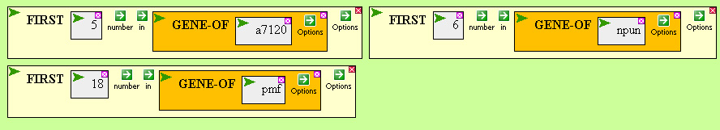
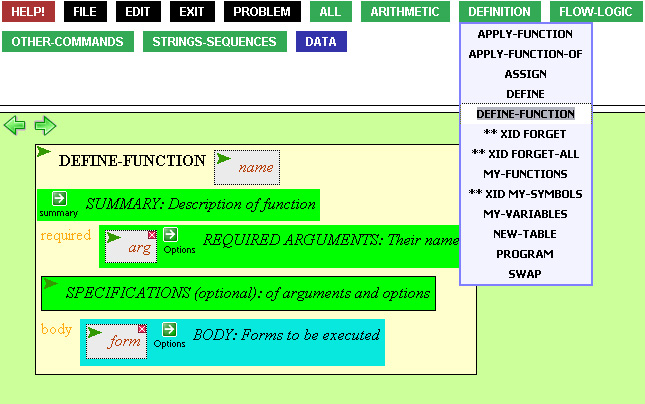
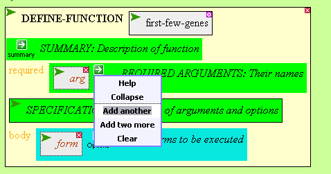
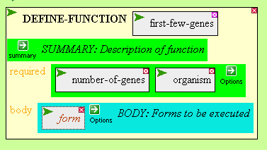
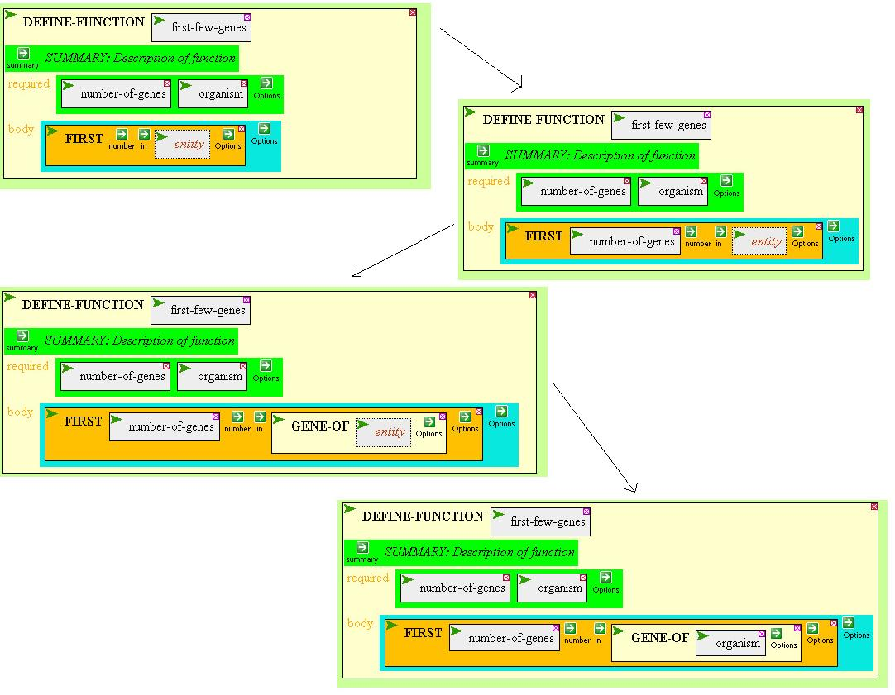
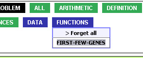
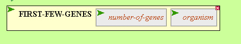
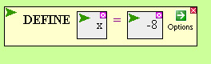
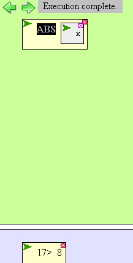

Define and Define-function
This fellow is repetitively bringing down FIRST and GENES-OF
to get the first few genes of different organisms. It would be much
better to write a new function.

First, bring down DEFINE-FUNCTION in the DEFINITION menu in the palette.

We'll call this function FIRST-FEW-GENES, and it will take two
required arguments, so that when we bring it down from the palette later
it will have two boxes that need to be filled in. Since DEFINE-FUNCTION
has a default of one required argument, move your mouse over
the green arrow in the 'REQUIRED ARGUMENTS' box and click 'Add another'.

The two inputs to this function will be NUMBER-OF-GENES and ORGANISM.

In the body we will construct the forms we want our function to execute.

After executing the DEFINE-FUNCTION, a FUNCTIONS box appears in the
palette containing our new function.

It can easily be brought down into the workspace just like
any other function.

DEFINE and ASSIGN both work much the same way, but assign a value --
maybe a list, a number, a string -- to a variable name.

This puts a VARIABLES menu in the palette, containing our variable.

And it can easily be brought down into the workspace:
